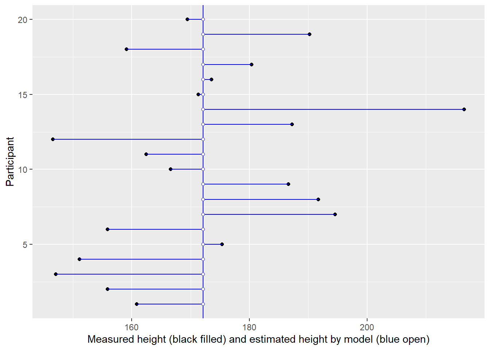
10 Parameters: combining information from an individual with population
When we infer values of parameters, we must decide on how to combine information available for an individual “random effect” entry (e.g., participant) and information about the distribution of values for this parameter in the sample in general or in some group within that sample. The former — data for an individual — describes an individual itself but is, necessarily, noisy. The latter — data for the entire sample — has better signal-to-noise ratio, as it pools information across all individuals, but is informative about averages not individuals.
Below I list various strategies that were used throughout the book. The main purpose is to show that they differ primarily in the relative contribution of the two sources and how individuals are used to compute averages. I will talk primarily about intercepts, as this is the most often varied parameter, but the same logic is applicable to any free parameter in the model.
10.1 Everyone is the same (single parameter)
The very first strategy that we used was to employ just a single intercept parameter in the model.
\[height_i \sim \alpha\\ \alpha \sim Normal(178, 9.5)\]
This is an extreme case of when we ignore the fact that people (monkeys, countries, etc.) are different and, effectively, model everyone as a single typical average meta-individual. The information about variance within the sample is discarded.
In the plot below, measurement for each individual (distinguished by their position on y-axis) is plotted on x-axis (black circles). But using a single intercept (vertical line) in the model, means all of them get an average height (blue open circles).
Another way to view the same data is by plotting raw data (y-axis) vs. used estimates (x-axis). The vertical line denotes the population mean, whereas the diagonal line implies that estimates are equal to the data.
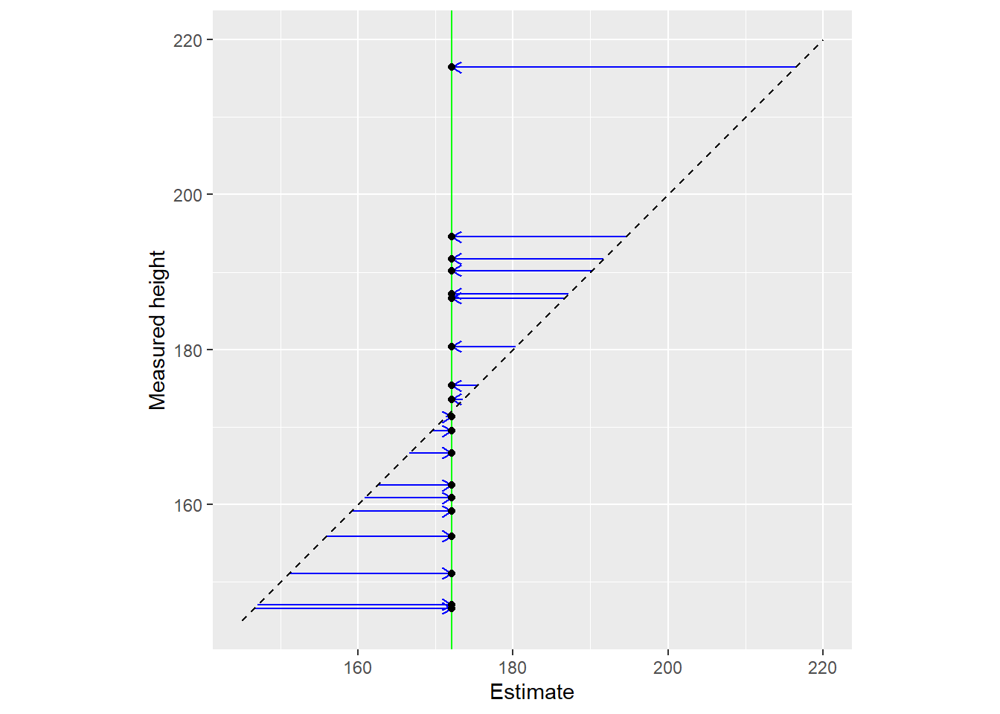
10.2 Everyone is unique (independent parameters)
The other extreme is to assume that everyone is unique and should be judged (estimated) using only their own data. Here, the information about the population is discarded.
\[height_i \sim \alpha_i\\ \alpha_i \sim Normal(178, 9.5)\]
This is the approach taken by paired t-test and repeated measures ANOVA. Note that it is likely to overfit the data, as we allow limited and noisy data to fully determine intercepts. Use of weak or flat priors (as in frequentist approach) is likely to make out-of-sample performance even worse.
In the plot below, measurement for each individual (distinguished by their position on y-axis) is plotted on x-axis (black circles). You cannot see black circles because they are covered by open blue circles — the estimates used by the model.
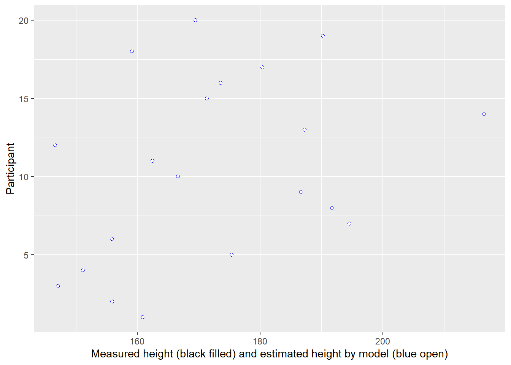
Here is another representation of the same data with all dots lying on the diagonal (estimate is equal to data). The vertical blue line still denotes the population mean this information is not used for estimates.
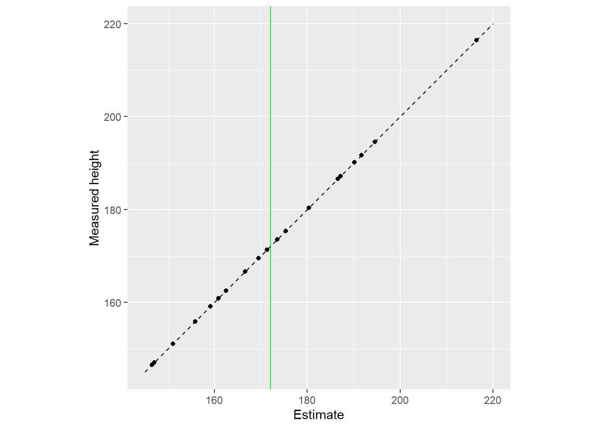
10.3 People are different but belong to a population (pooled parameters)
A more balanced approach is to combine data from an individual and population. This is a two level (multilevel) approach, where an individual parameter value comes from a population (group) level distribution.
\[height_i \sim \alpha_i\\ \alpha_i \sim Normal(\alpha^{pop}, \sigma^{\alpha})\\ \alpha^{pop} \sim Normal(178, 9.5)\\ \sigma^{\alpha} \sim Exponential(1)\]
The basic idea is the “regression to the mean”, so that unusual-looking individuals are probably more average than they appear. In other words, they are so unusual because of the noise during that particular measurement. During a next measurement the noise will be different, probably not so extreme, and the individual will appear to be more normal. The pull of extreme observations toward the mean is the same as one from a static prior. The main difference is that we use adaptive priors and determine how typical/unusual an observation is based on all observations themselves, including the extreme ones. As with “normal” priors, the influence of adaptive prior is most pronounced for extreme, unreliable observations, or observations with small amount of data. They are easier to overfit and, hence, benefit most from regularizing priors.
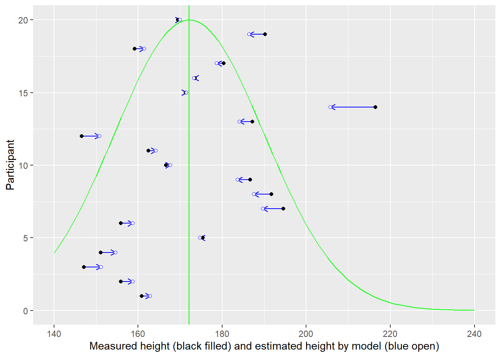
Warning in geom_segment(aes(x = 145, y = 145, xend = 220, yend = 220), linetype = "dashed"): All aesthetics have length 1, but the data has 20 rows.
ℹ Please consider using `annotate()` or provide this layer with data containing
a single row.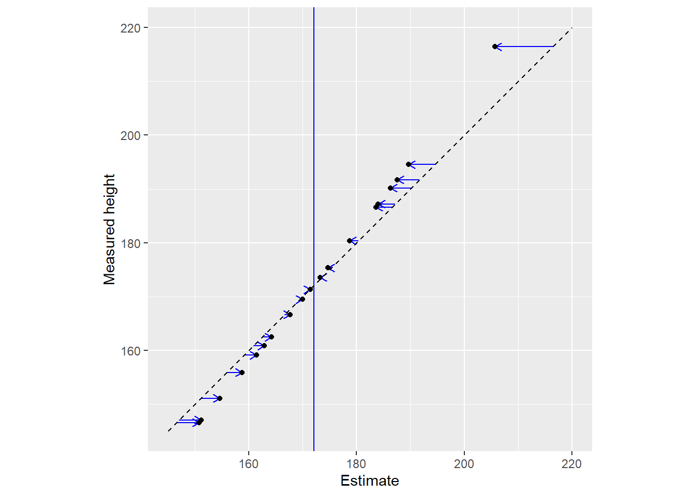
10.4 People are different but belong to a group within a population (multilevel clusters of pooled parameters)
A logical extension of a two-level approach is to extended it with more levels: An individual belongs to a group (cluster) which, in turn, belongs to a population.
\[height_i \sim \alpha_i\\ \alpha_i \sim Normal(\alpha^{group}_i, \sigma^{group})\\ alpha^{group} \sim Normal(\alpha^{pop}, \sigma^{pop}) \\ \alpha^{pop} \sim Normal(178, 9.5)\\ \sigma^{\alpha}, \sigma^{group} \sim Exponential(1)\]
For an individual, it allows to pool information across a more relevant group. For example, males tend to be taller than females, so it would make more sense to use female sub-population/group/cluster to decide on just how typical a given female is. Same goes for other types of clusters: e.g., students from a particular school are probably more similar in their knowledge on a particular subject (such as math) as compared to students from other schools. At the same time, we can still pull information across clusters, making our inferences about them more reliable as well. And, of course, you are not limited in the number of levels you can create: students within a school, schools within a district, districts within a city, etc.
In the plots below, notice that sex cluster distributions are tighter than a single population distribution above. Also notice how individual observers are pulled toward the group mean and, again, the pull is proportional to how atypical a value is.
Warning: Returning more (or less) than 1 row per `summarise()` group was deprecated in
dplyr 1.1.0.
ℹ Please use `reframe()` instead.
ℹ When switching from `summarise()` to `reframe()`, remember that `reframe()`
always returns an ungrouped data frame and adjust accordingly.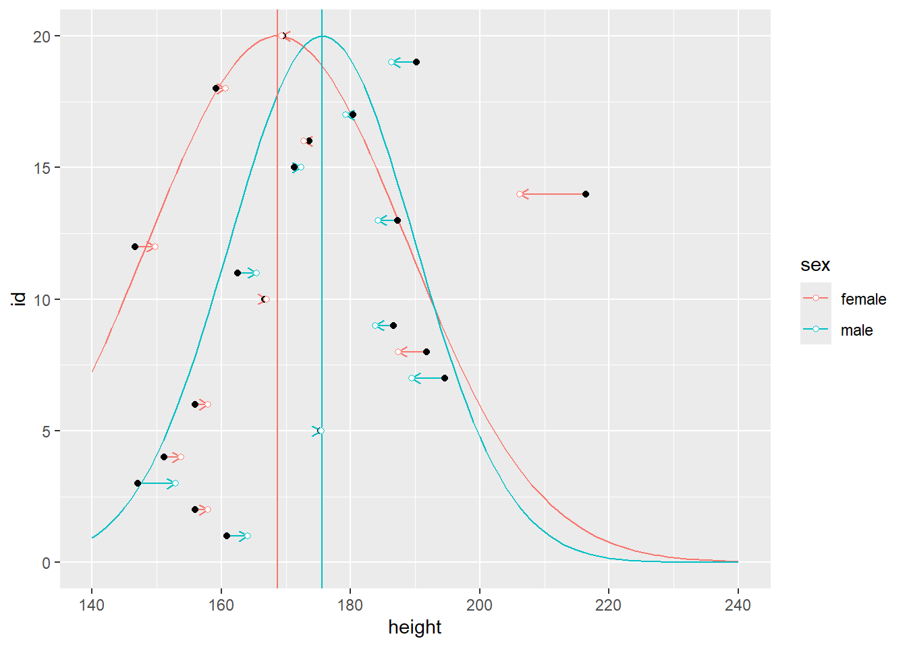
Warning in geom_segment(aes(x = 145, y = 145, xend = 220, yend = 220), color = "black", : All aesthetics have length 1, but the data has 20 rows.
ℹ Please consider using `annotate()` or provide this layer with data containing
a single row.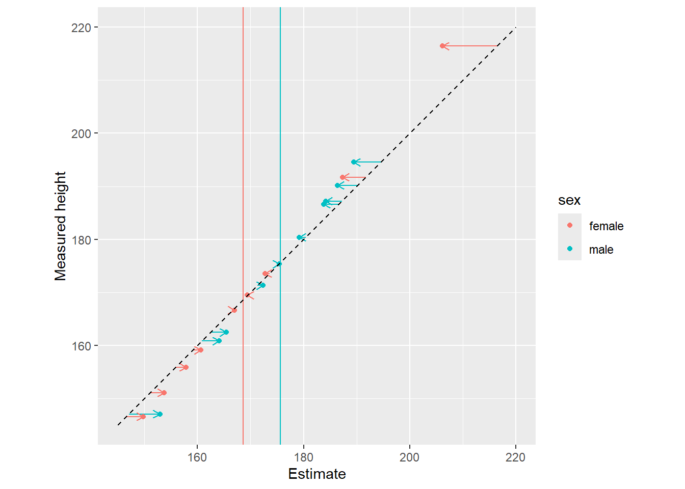
10.5 People are similar to some but different to others (Gaussian process)
Multilevel approach with clusters is very useful but it works only if you have well-defined discrete cluster: sex, school a student belongs to, occupation, etc. However, sometimes there are no such clear boundaries. Rather, you can presume that similarity in a property that you are interested in (height, in our case) could be proportional to another well defined measure of similarity / distance between the individuals. For example, one could, perhaps naively, assume that individuals that are more similar in their genes have more similar height. In that case, we can compute distance between their genetic sequences and use that distance to define a population relative to an individual.
\[height_i \sim \alpha^{pop} + \alpha_i\\ \begin{pmatrix} \alpha_1 \\ \alpha_2 \\ \dots \\ \alpha_N \end{pmatrix} \sim MVNormal( \begin{pmatrix}0, 0, \dots, 0 \end{pmatrix}, K)\\ K_{ij} = = \eta^2 exp(−\rho^2D^2_{ij}) + \delta_{ij}\sigma^2 \\ \alpha^{pop} \sim Normal(178, 9.5)\]
where \(D_{ij}\) is the distance between individuals (see the book for further details on the formula and Gaussian process in general).
Generally speaking, the idea is that contribution of observations is proportional to their distance to the individual in question. It also means that there are no discrete cluster. Rather, each observation gets its own distance-based population distribution which it is judged against. Note, however, that parameter \(\rho\) adjusts the effect of the distance making it more or less relevant. Thus, the distance can be ignored by the model (via smaller value of \(\rho\)) meaning that all observations/individuals contribute equally to the population distribution (relative to an individual), i.e., a given intercept is correlated with everybody else. Conversely, larger values of \(\rho\) mean that only nearest neighbors are taken into account.
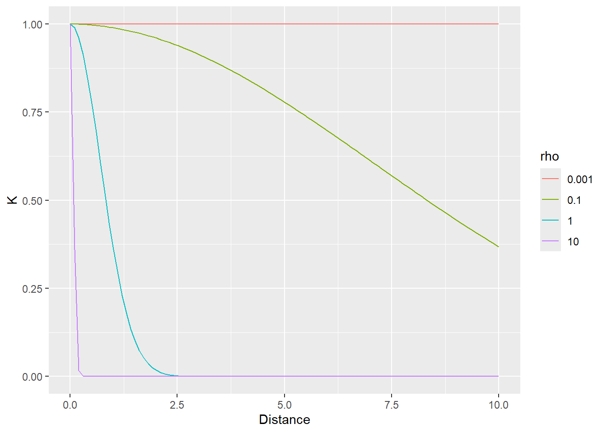
In the example below, the distance between individuals is determined by the distance on the vertical axis. The first plot use \(\rho=1\) that samples most observations (dot size reflect the \(K\) used in the MVNormal). It produces a fairly broad population distribution and shift the first participant to the right.
Warning: Returning more (or less) than 1 row per `summarise()` group was deprecated in
dplyr 1.1.0.
ℹ Please use `reframe()` instead.
ℹ When switching from `summarise()` to `reframe()`, remember that `reframe()`
always returns an ungrouped data frame and adjust accordingly.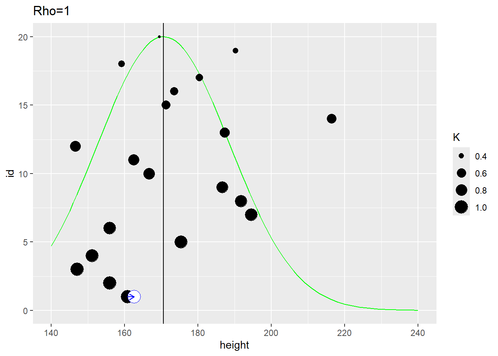
The second plot uses the same distance measure but \(\rho=10\) meaning that it is the close neighbors that affect the estimate. Here, the population distribution is much tighter and the estimate for the first participant is shifted to the left.
Warning: Returning more (or less) than 1 row per `summarise()` group was deprecated in
dplyr 1.1.0.
ℹ Please use `reframe()` instead.
ℹ When switching from `summarise()` to `reframe()`, remember that `reframe()`
always returns an ungrouped data frame and adjust accordingly.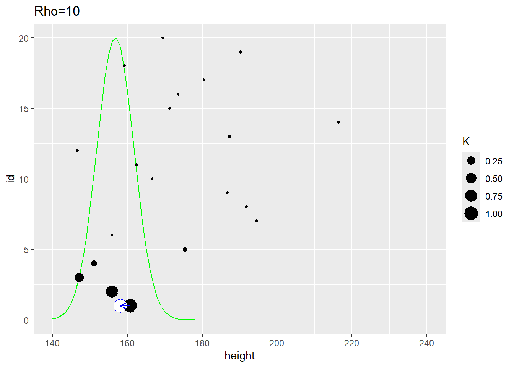